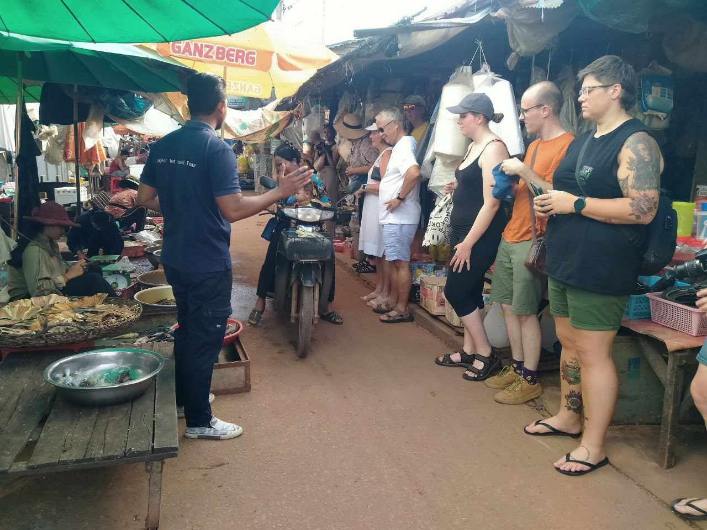
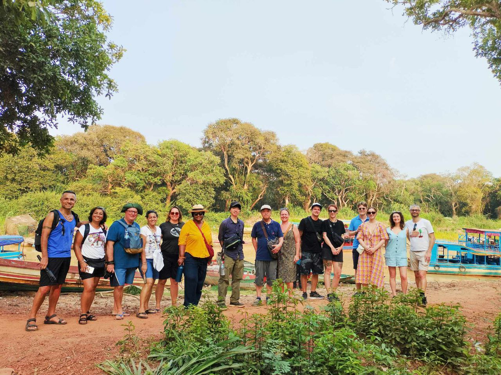
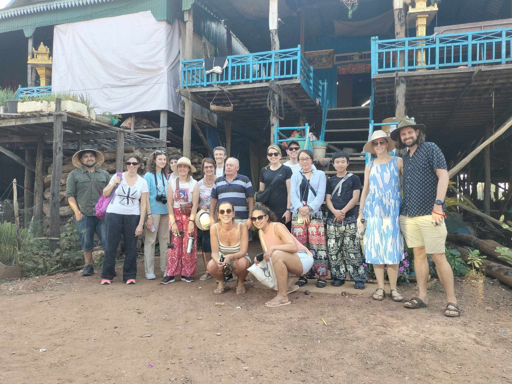
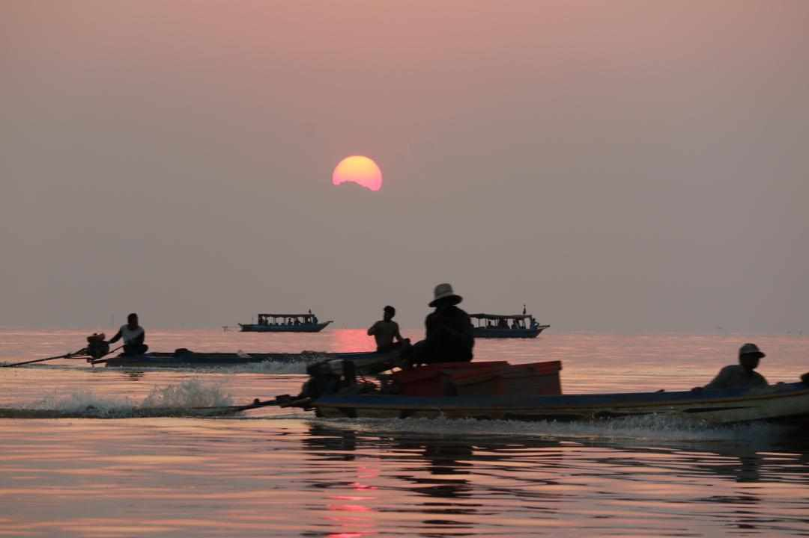
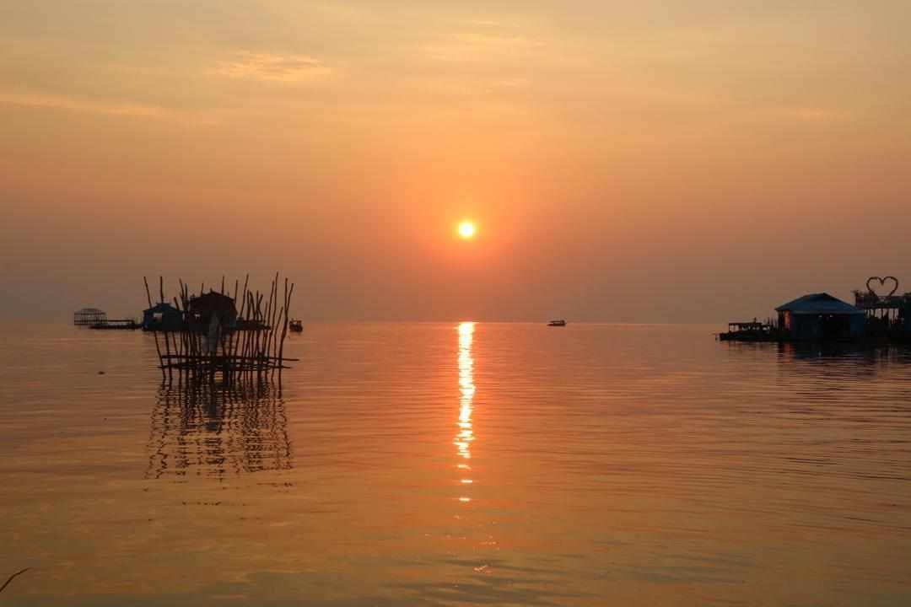
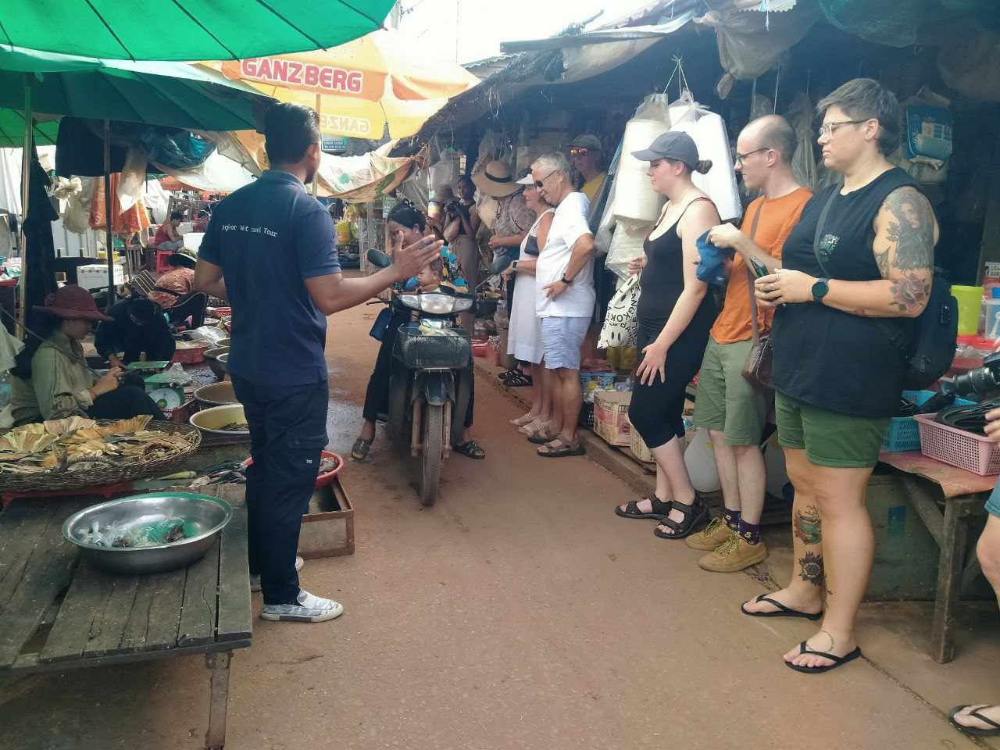
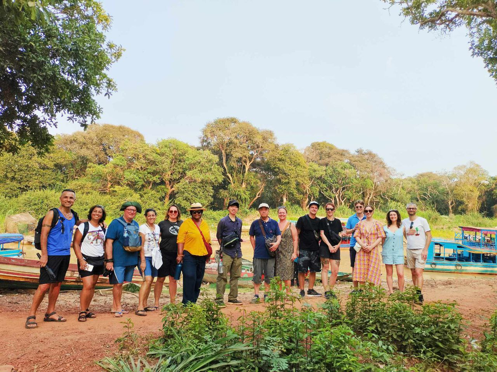
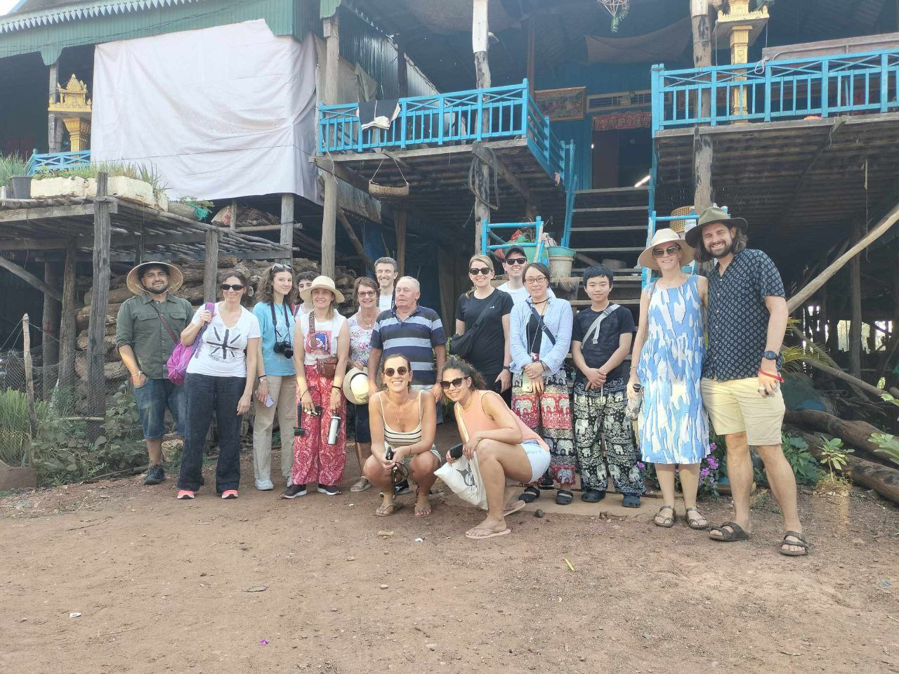
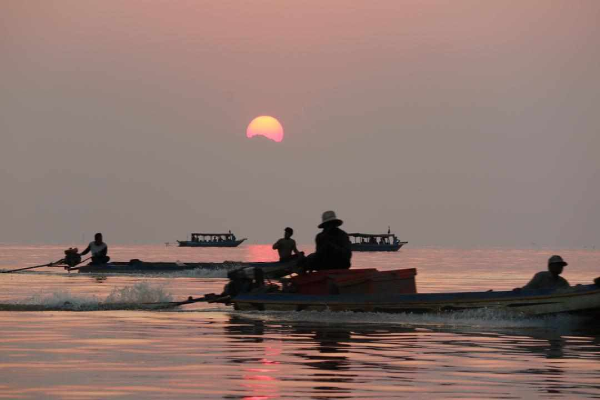
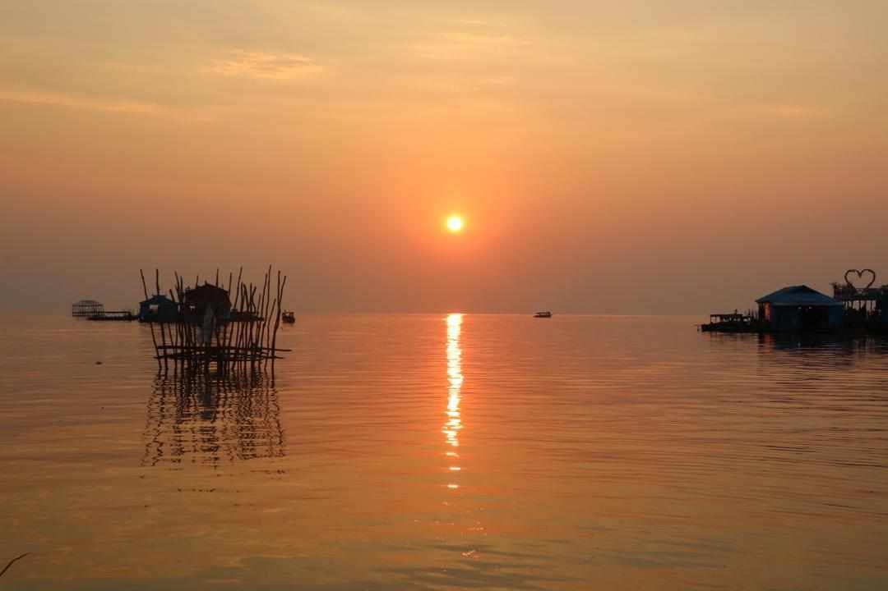

| Small Circuit |
| The most popular tour at Onederz. After watching sunrise at Angkor Wat temple, our driver will take you to temples along:Angkor Wat, Bayon, Takeo, Ta Prohm and Banteay Kdei. |
| Option: |
| Private Small Circuit Tour |
| 15 USD/Tuk Tuk (no sunrise) |
| Duration: 4 - 6 hours |
| Departure bettween 7:30 am - 12:00 pm |
| 18 USD/Tuk Tuk (with sunrise) |
| Duration: 6 - 7 hours |
| Departure: 4:30 am |
| Sharing Small Circuit + Sunrise Tour |
| 6 USD/person (no guide) |
| 12 USD/person (with guide) |
| Duration: 6 - 7 hours |
| Departure: 4:30 am |
You need to buy the temples pass before entry
1 Day = 37 USD
3 Days = 62 USD
7 Days = 72 USD
You can purchase ticket on the way to the temple or purchase online : angkorenterprise.gov.kh
| Grand Circuit |
| The Grand Circuit tour is separate from the Small Circuit tour. And the distance is farther than the Small Circuit tour, our driver will take you to temples along:Preah Khan, Ta Som, Neak Pean and Pre Rup. |
| Option: |
| Private Grand Circuit Tour |
| 18 USD/Tuk Tuk (no sunset) |
| Duration: 4 - 5 hours |
| Departure bettween 7:30 am - 12:30 pm |
| 21 USD/Tuk Tuk (with sunset) |
| Duration: 5 - 6 hours |
| Departure: 12:30 pm |
| Sharing Grand Circuit + Sunset Tour |
| 7 USD/person (no guide) |
| Duration: 5 - 6 hours |
| Departure: 12:30 pm |
You need to buy the temples pass before entry
1 Day = 37 USD
3 Days = 62 USD
7 Days = 72 USD
You can purchase ticket on the way to the temple or purchase online : angkorenterprise.gov.kh
Banteay Srei
Banteay Srei is located 38km northeast of Siem Reap, but it is a must-see for temple buffs. While the temple is smaller than other temples, you will see intricate and well-preserved decorative carving on the structure.
| Private Tuk Tuk to Banteay Srei |
| 25 USD/Tuk Tuk |
| Duration: 4 hours |
| Departure between 7:00 am - 12:00 pm |
 |
You need to buy the temples pass before entry
1 Day = 37 USD
3 Days = 62 USD
7 Days = 72 USD
You can purchase ticket on the way to the temple or purchase online : angkorenterprise.gov.kh
Beng Mealea
Although Beng Mealea is a bit far from Siem Reap (70km), we highly recommend you visit here. On the contrary to Angkor Wat, which size is almost the same as Beng Mealea, this temple hasn't been fixed yet. However, that will make your tour full of adventure and mystery.
| Private Transportation To Beng Mealea |
| 25 USD/Tuk Tuk |
| 70 USD/Car |
| 75 USD/Van |
| Duration: 4 hours |
| Departure between 8:00 am - 1:00 pm |
 |
You need to buy the temples pass before entry
1 Day = 37 USD
3 Days = 62 USD
7 Days = 72 USD
You can purchase ticket on the way to the temple or purchase online : angkorenterprise.gov.kh
Koh Ker & Beng Mealea
Koh Ker is located 130km from Siem Reap, and visiting there is easily combined with a trip to Beng Mealea. The main temple at Koh Ker is a 7-tier step-pyramid, and the views from the top are a very rewarding experience.
| Private Transportation |
| 120 USD/Car |
| Duration: 6 hours |
| Departure between 7:00 am - 10:00 am |
|
You need to buy the temples pass before entry
1 Day = 37 USD
3 Days = 62 USD
7 Days = 72 USD
Koh Ker is use other ticket = 15 USD entrance ticket.
You can purchase ticket on the way to the temple or purchase online : angkorenterprise.gov.kh
Floating Village (Kampong Phluk)
Several communities of people are living on the Tonle Sap Lake. Kampong Phluk, which literally means "harbour of the tusks," is just over 30km from Siem Reap. You will see how the people live on the lake and the beautiful sunset on the lake. Going to the floating forest will cost you 5.5 USD per person since you have to get another small boat to go there.
| Sharing Floating Village |
| 19 USD/person |
| Duration: 4 hours |
| Departure: 2:30 pm |
| In April and June, this tour is not available because there is not enough water in the lake. |
 









Cycling Tour (Visit Countryside)
This tour will be the best option for you if you want to see local lives and beautiful landscapes through the Siem Reap countryside. We make lots of stops to see the daily villages and farms and to enjoy some delicious local snacks. Let's explore the local villages with Onederz. You will know how beautiful Cambodia is.
| Every : Monday, Thursday and Saturday |
| 12 USD/person |
| Duration: 4 hours |
| Departure: 3:30 pm |
| Includes: Bicycle, 1 Drink, Dinner. |
 |
Street Food Tour
This tour will be the best option for you if you want to see local lives and beautiful landscapes through the Siem Reap countryside. We make lots of stops to see the daily villages and farms and to enjoy some delicious local snacks. Let's explore the local villages with Onederz. You will know how beautiful Cambodia is.
| Every : Wednesday and Sunday |
| 12 USD/person |
| Duration: 2 - 3 hours |
| Departure: 5:30 pm |
| Includes: Transport, Drinks, Snacks. |
 |
Kulen Mountain Waterfalls
Phnom Kulen, also known as Kulen Mountain, is a national park located in Siem Reap province, Cambodia. It is about 50 kilometers northeast of the Angkor complex and is one of Cambodia's most revered sites, with sandstone banks for the temples of Angkor. An hour and half bus ride to Kulen National Park The guests will get to see the amazing cliff view, the One Thousand Lingas River, a small lagoon, the Reclining Buddha Pagoda, and swim in the largest waterfalls in Siem Reap.
| Every : Tuesday and Friday |
| 33 USD/person |
| Duration: 6 - 7 hours |
| Departure: 8:30 am |
| Includes: Entrance Ticket, Transport, Snack.What guest should bring: Temple dress code, Swimming suit. |
 |
Phare The Cambodia Circus
Siem Reap's most unique, authentic, and top-rated evening entertainment. More than just a circus, Phare performers use theater, music, dance, and modern circus arts to tell uniquely Cambodian stories, historical, folk, and modern. The young circus artists will astonish you with their energy, emotion, enthusiasm, and talent.
| Everyday |
| 18 USD/person (seat C) |
| 28 USD/person (seat B) |
| 38 USD/person (seat A) |
| Duration: 60 minutes |
| Performance start at: 8:00 pm |
| You have to be at the circus at least 30 miutes before the show start. It will cost 3 USD (1way) by Tuk Tuk to get there. |
 |
Khmer Cooking Class at a local's house
Cambodia is known for its fascinating cuisine and colorful dishes. A trip to Siem Reap wouldn't be complete without at least having the chance to try their delicious food. On this special activity, you won't only get to try authentic Khmer food, but you will also learn how to cook their dishes! Experience walking around the local market to find fresh ingredients for the dishes before making your way to a local's house for the private cooking class.
| Everyday |
| 25 USD/person | |
| Morning Time | : 9:30 am - 12:30 pm |
| Afteroon Time | : 12:30pm - 3:30 pm |
| Evening Time | : 3:30 pm - 6:30 pm |
| Included 4 dishes with choice to choose*Pick up / Drop off at Onederz Hostel*Experienced local host/guide*Ingredients for you dishes*Live tour commentary provided in Eglish | |
 |